Smart Campus Navigation Dashboard
Explore our prototype navigation system in action:
VISION INTO IMMERSIVE REALITY
Welcome to GEONEXUS, where boundaries disappear and possibilities connect. We don't just build 3D models — we engineer digital realities.
We capture navigational assets on the ground at Hatfield Campus using QField.
LiDAR guides us as we digitise every building and the pathways between them.
Buildings are extruded to their real heights to form an interactive 3D campus.
Buffers, centroids and distance matrices turn the data into a connected network.
Explore our prototype navigation system in action:
Every point was logged with its closest building, so it ties into the campus network.
How we used buffers, centroids and a distance matrix to build an evenly spread, connected campus network.
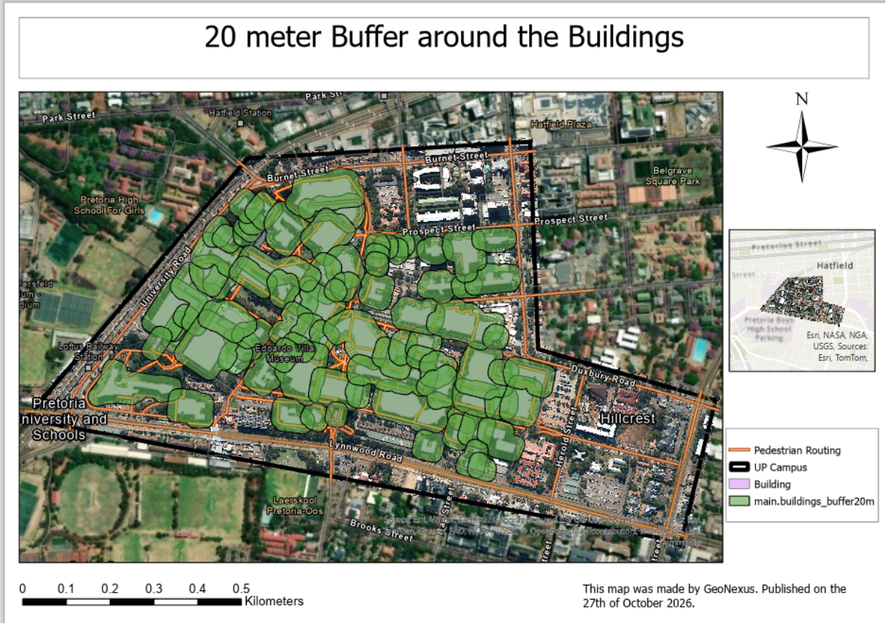
GEONEXUS was established in 2026 to bridge the gap between physical topography and digital consciousness. Our mission is to seamlessly map the physical world into an immersive, interactive reality framework.
To pioneer the future of spatial intelligence by transforming complex physical environments into highly accurate, immersive, and interactive 3D digital realities.
To bridge physical topography and digital ecosystems through automated spatial data pipelines, advanced web mapping architectures, and seamless 3D spatial modeling.
Every model starts with data collected on the ground and checked against the real world.
We link physical places and digital systems so people can move through both with ease.
Complex spatial data should be simple to see, explore and understand.
We automate our data pipelines and keep testing new ways to present space.
Geoinformatics & System Design
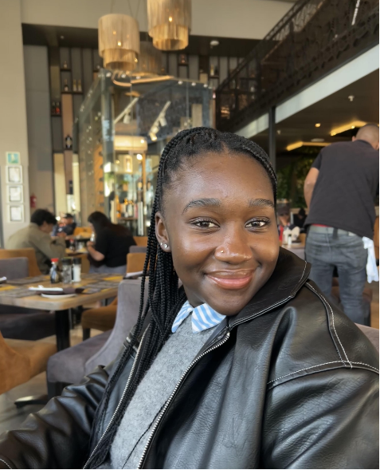
Spatial Modelling
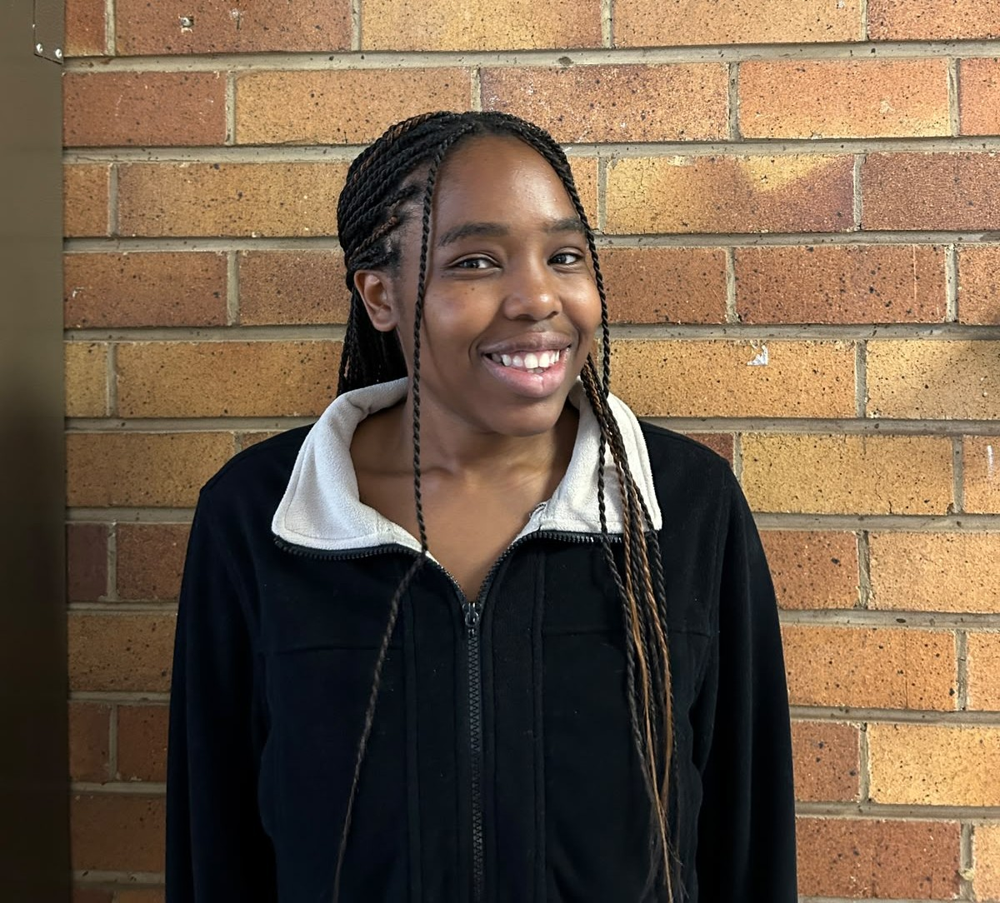
Web Architecture
You cannot build a good spatial model without solid ground-truth data. This week, we stepped away from the lab to map the pathways and nodes that will run our Smart Campus navigation dashboard system.
Before heading outside, we set up our data collection forms in QField. Getting our database schemas sorted beforehand meant that once we were on campus, logging the points and attributes was quick and standardized.
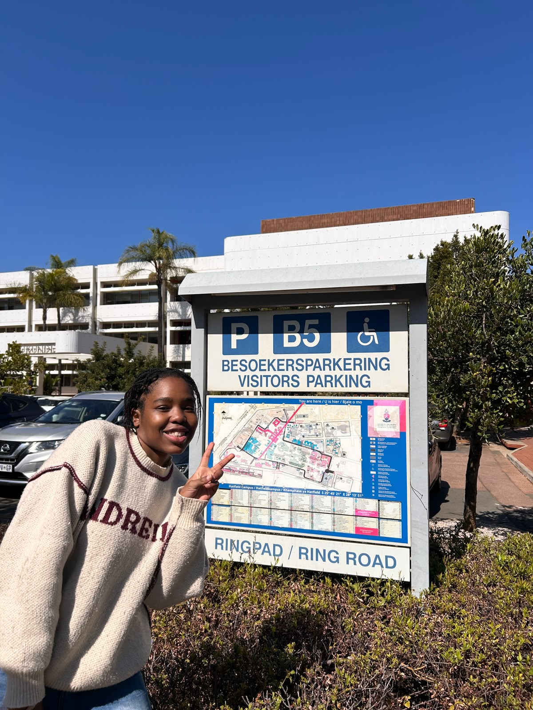
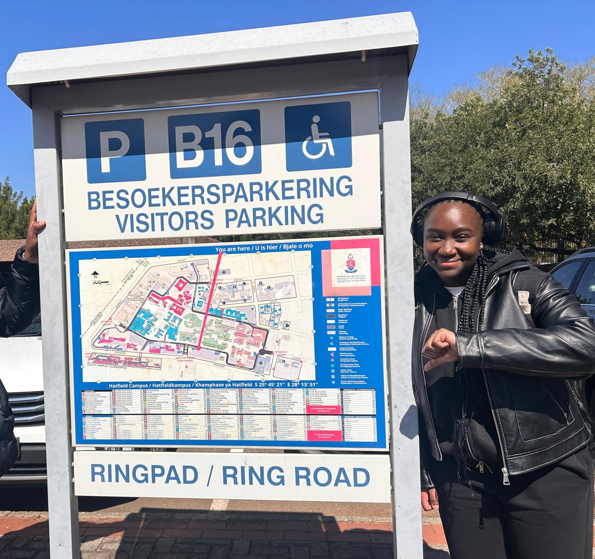
We headed out across the Hatfield campus to track down our key navigational assets. We used our mobile setups to capture the exact point coordinates of the existing infrastructure. It is one thing to look at an aerial orthophoto, but being on the ground is the only way to accurately log the specific locations of turnstile entrances, static maps, sign boards, and old LCD displays, and make sure they are properly tied to the closest buildings.
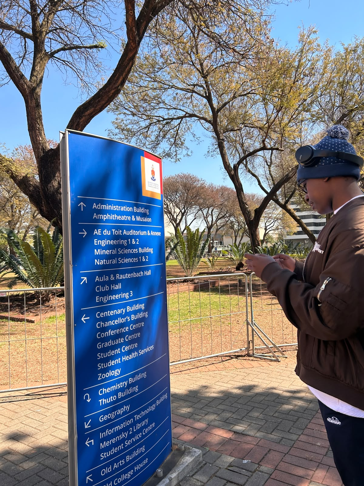
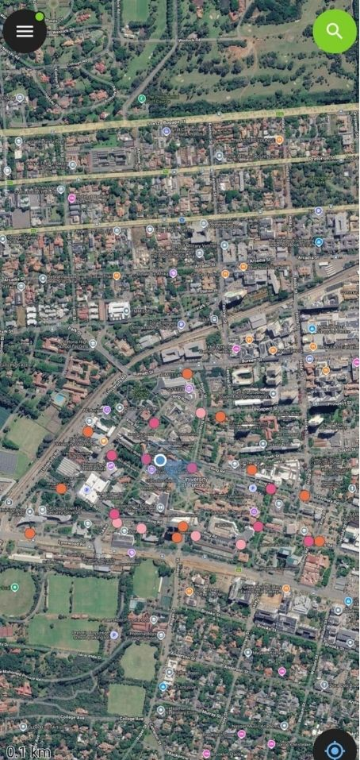
Using QField, we focused specifically on capturing existing navigational assets around campus. We logged:
For every point we collected, we also recorded its attributes by noting the closest landmark or building to tie it accurately to the campus network.
Now that the raw spatial data is collected, we are taking it back into QGIS. The next step is to clean up the topology, run our location-allocation models, and integrate everything into the 3D visualization.
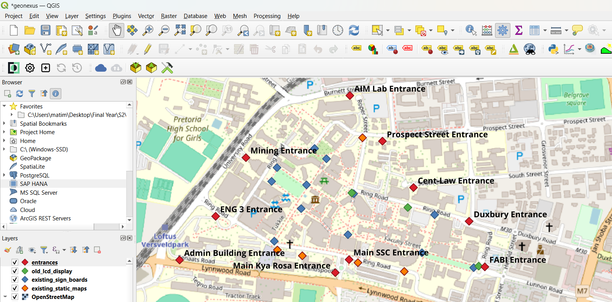
After collecting the field data, the next step was to configure the LiDAR so that it highlighted buildings specifically. This allowed the dataset to serve as a reliable guide during the digitizing process. By focusing on building structures, the LiDAR provided a clear framework for accurate mapping and ensured that the digitized features aligned with real-world conditions.
Once the LiDAR was set up, the digitizing process began. All buildings within the study area were carefully digitized, along with the pathways that connected them. This step was crucial because it transformed raw spatial data into usable vector features, forming the foundation for subsequent modeling. The inclusion of pathways added an important layer of connectivity, making the dataset more comprehensive.
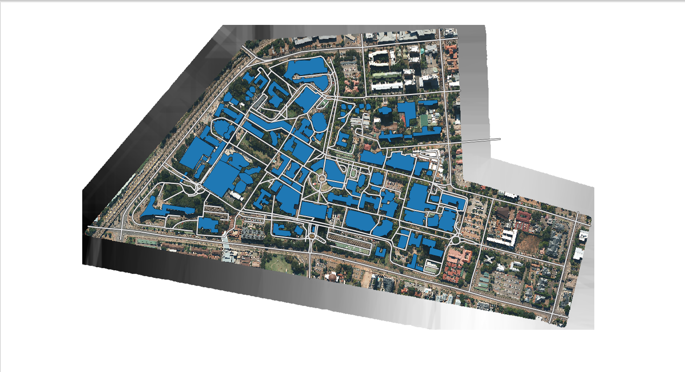
After digitizing, the workflow progressed to the creation of a 3D model. The digitized buildings were extruded to represent their heights, while pathways were integrated to reflect the spatial layout of the area. This 3D model provided a more realistic visualization of the environment, enabling better analysis of spatial relationships and offering a powerful tool for presentation and interpretation.
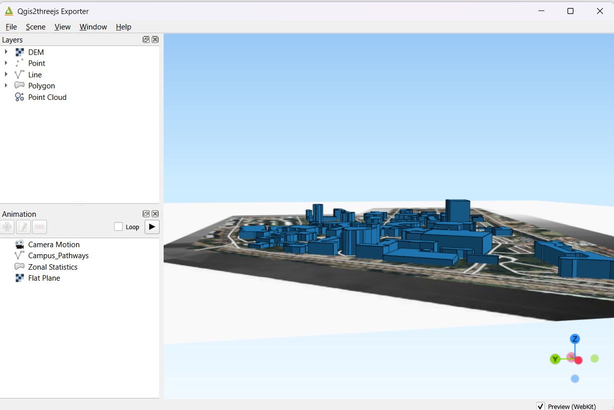
After completing the 3D model, the workflow advanced into spatial analysis using map screens. The first step was to generate buffers around the buildings and their entrances. These buffers created zones of influence, which helped in identifying areas of potential interaction between structures and access points. By intersecting the buffers, polygons were formed that represented overlapping areas of influence.
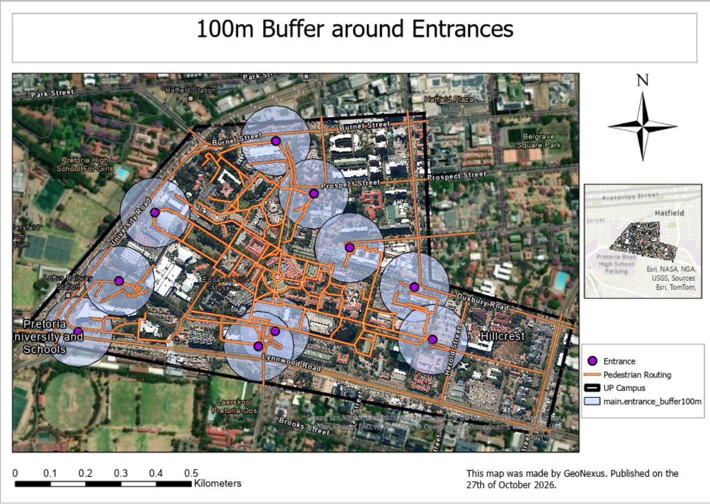
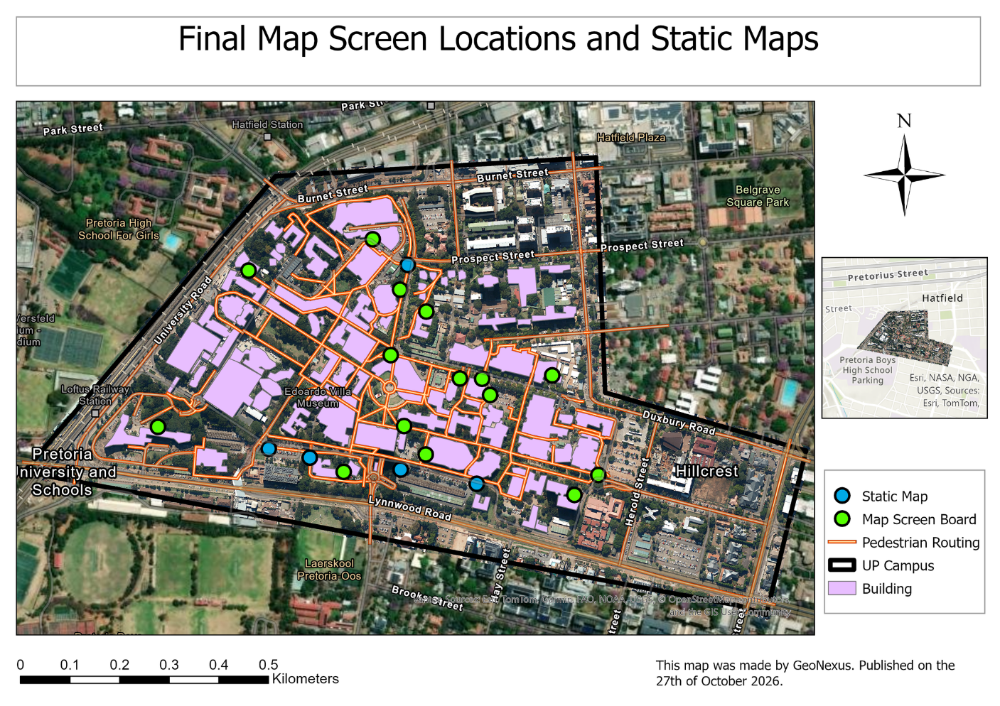
From these intersection polygons, the centroids function was applied to calculate central points. These centroids acted as representative locations within each overlap zone. To integrate them into the network, the centroids were snapped to the pathway layer, ensuring that they aligned with existing circulation routes. This step was important for maintaining spatial connectivity and realism in the analysis.
However, snapping centroids to pathways sometimes resulted in clusters of points in certain areas. To address this, the distance matrix function was used. This function calculates the Euclidean distance between points, allowing for the identification and reduction of clustering. By applying it, the dataset was refined to ensure that points were more evenly distributed, improving the accuracy and usability of the analysis.
Explore the campus in a fully immersive 3D environment.
Visualise the campus data in a dynamic and interactive manner.
Access the campus data through our web-based platform.